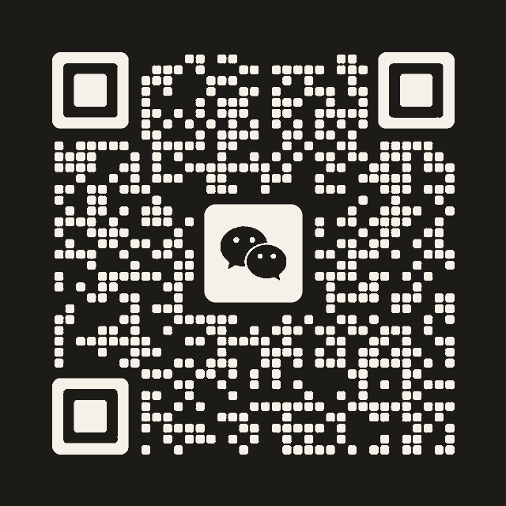

Visual Communication / Graduation Design
蒋左丞 作品集
广西师范大学设计学院设计专业研究生在读，方向为视觉传达与数字媒体设计。本科毕业于河池学院环境设计专业，作品集整理视觉传达、空间设计与数字媒体相关项目。

Visual Communication / Graduation Design
广西师范大学设计学院设计专业研究生在读，方向为视觉传达与数字媒体设计。本科毕业于河池学院环境设计专业，作品集整理视觉传达、空间设计与数字媒体相关项目。
